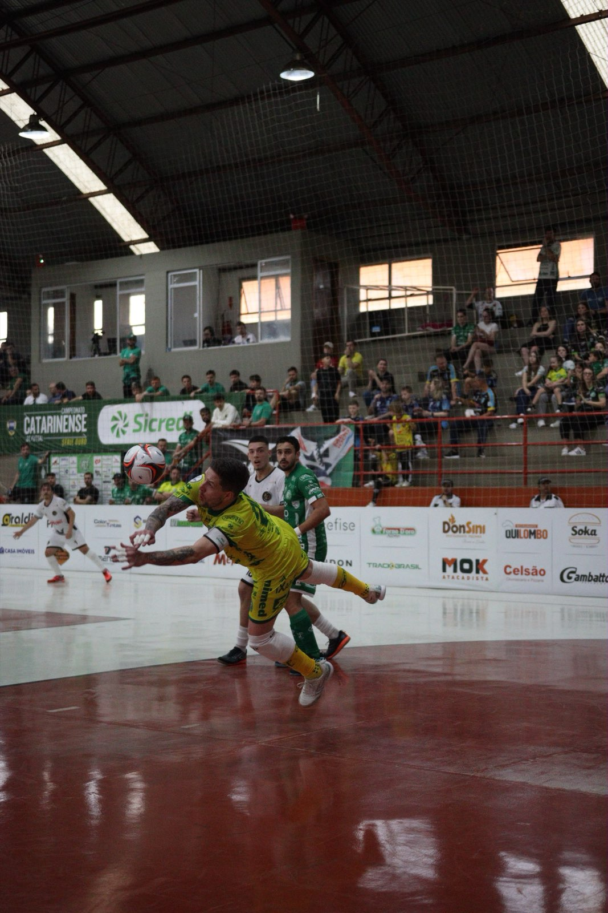
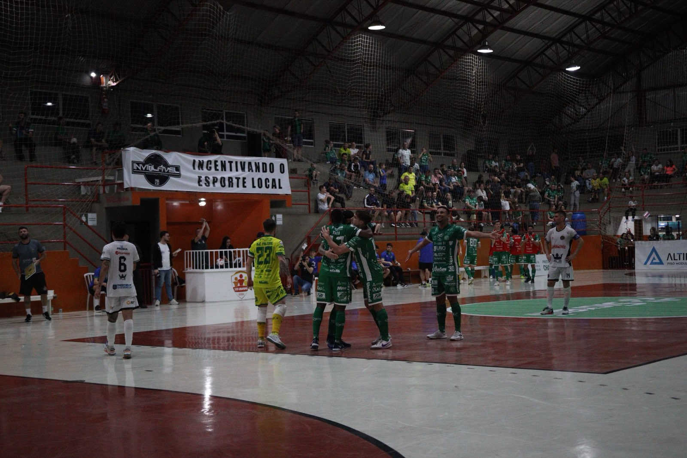
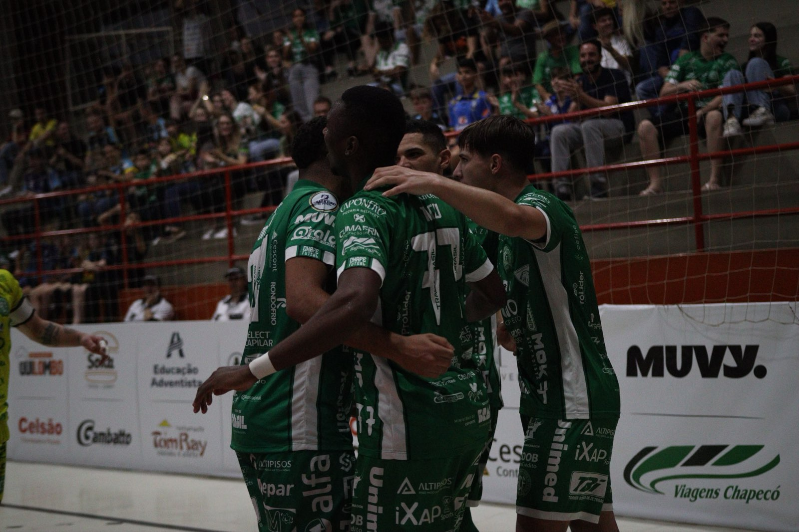

Siga o líder! A Prefeitura de Chapecó/Chapecoense/Unochapecó está de volta ao topo da classificação da Série Ouro da Federação Catarinense de Futsal. Neste sábado (15), diante de grande público, o time do técnico Leo Schroeder venceu a Apaff/Floripa por 6 a 3 no Ginásio Plínio Arlindo De Nes (SER Aurora), em Chapecó, pela nona rodada.

Movimentação e entrega das equipes sobraram no primeiro tempo. Um jogo bastante disputado e em que qualquer erro custaria caro. Após reposição lateral, Lelê chegou batendo para colocar a Apaff/Floripa na frente, aos 12’54”. A Chapecoense foi em atrás do empate e conseguiu aos 16’40”. Kassula limpou bem o marcador e soltou a bomba, acertando o canto direito do goleiro, fechando o placar da etapa inicial.
A Chape Futsal voltou do intervalo disposta a assumir a dianteira da partida e, de tanto pressionar, virou aos 5’25”. Tutu recebeu na cobrança de escanteio e pegou de voleio para fazer um golaço. Os anfitriões criaram várias chances, mas os visitantes surpreenderam aos 7’08”. O goleiro Heitor conduziu a bola e mandou no canto. Porém, a resposta veio de forma letal aos 11’19”. A bola se ofereceu para Maranhão na cara do goleiro e ele deu um toque sutil por cobertura para marcar outro belo gol.

O Verdão das Quadras não se deu por satisfeito e foi em busca de aumentar a vantagem. Aos 12’36”, Tutu saiu da marcação e chutou de direita para estufar a rede. O jogo era eletrizante e a equipe da capital descontou aos 15’11”, com Alisson finalizando depois de roubada de bola. Contudo, os donos da casa não demoraram para anotar o quinto. Aos 16’17”, Nogueira foi acionado e rolou para a meta. A 38 segundos do fim, com a Apaff usando o goleiro-linha, João Camilo ampliou.

Com o resultado, a Chapecoense chegou aos 16 pontos e aparece na liderança isolada da competição. O próximo desafio será no sábado que vem (22), às 17h, contra o Traipu, desta vez pelo Campeonato Brasileiro. O compromisso vale pela quinta rodada e terá como palco o Ginásio João Paulo II, em Arapiraca (AL).
Crédito das fotos: @rogersilva_fotografia/@achapefutsal